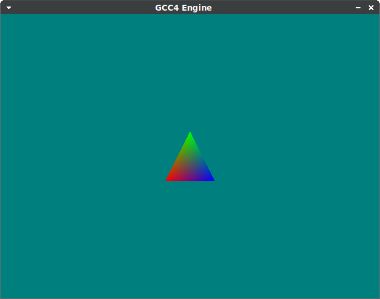
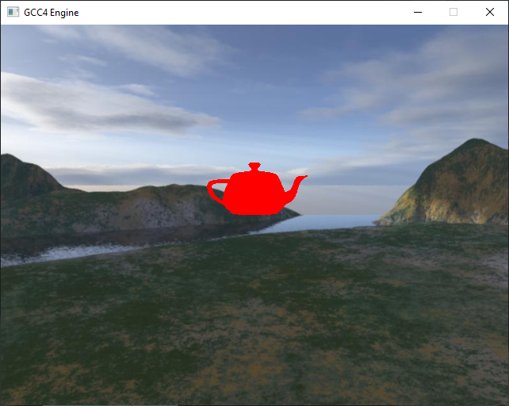
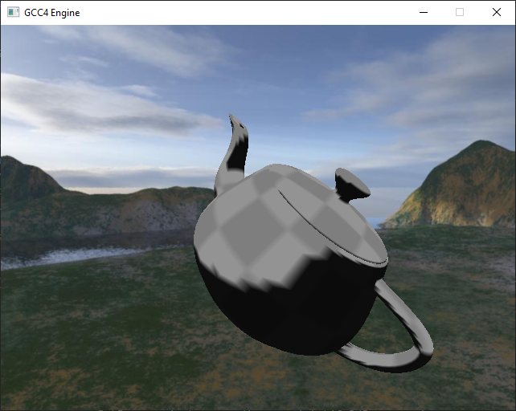
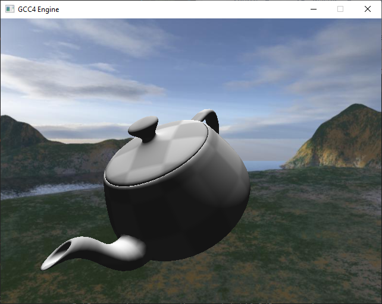

Game Coding Complete Notes

Code here: https://github.com/williamblair/game_code_complete
Chapter 3
Memory Pool
Each entry in the memory pool in this chapter has a header which is a pointer to the next entry in the memory pool. Each entry is the same size, so it is a pool of fixed size chunks, which is why we don't need to store the size in the header as well.
I added a test main program which uses chunks of 8 bytes (64 bits) then prints and shows the pool contents and the corresponding header pointers:
static const size_t CHUNK_SIZE = sizeof(uint64_t); // each allocated entry will be 8 bytes
static const size_t NUM_CHUNKS = 10; // there will be memory available for 10 chunks at a time
...
if ( !memPool.Init( CHUNK_SIZE, NUM_CHUNKS ) ) {
printf("Failed to init mem pool\n");
return 1;
}
...
// free from pool
while ( allocMap.size() > 0 )
{
auto pairIter = allocMap.begin();
uint8_t** ppChunkHeader = (uint8_t**)( (uint8_t*)pairIter->first -
sizeof(uint8_t*) );
uint8_t* pNextListEntry = ppChunkHeader[0];
printf("Freeing 0x%08X (chunk header = 0x%08X)\n",
pairIter->first, (void*)ppChunkHeader );
printf(" Points to: 0x%08X\n", (void*)pNextListEntry );
memPool.Free( pairIter->first );
allocMap.erase( pairIter );
}Which, as an example run, shows the addresses linked to each other:
Freeing 0x000003A8 (chunk header = 0x000003A0)
Points to: 0x000003B0
Freeing 0x000003B8 (chunk header = 0x000003B0)
Points to: 0x000003C0
Freeing 0x000003C8 (chunk header = 0x000003C0)
Points to: 0x000003D0
Freeing 0x000003D8 (chunk header = 0x000003D0)
Points to: 0x000003E0
Freeing 0x000003E8 (chunk header = 0x000003E0)
Points to: 0x000003F0
Freeing 0x000003F8 (chunk header = 0x000003F0)
Points to: 0x00000400
Freeing 0x00000408 (chunk header = 0x00000400)
Points to: 0x00000410
Freeing 0x00000418 (chunk header = 0x00000410)
Points to: 0x00000420
Freeing 0x00000428 (chunk header = 0x00000420)
Points to: 0x00000430
Freeing 0x00000438 (chunk header = 0x00000430)
Points to: 0x00000000Chapter 6
Actors/Components
Used timyxml2 instead of tinyxml like the book uses. The basic tinyxml2 objects representing XML nodes are XMLElement and the top level loaded XML is XMLDocument. Basic usage is:
#include <tinyxml2.h>
using namespace tinyxml2;
XMLDocument* pDoc = new XMLDocument;
pDoc->LoadFile( filename );
XMLElement* pRoot = pDoc->RootElement();
// loop through each child XML element
for ( XMLElement* pNode = pRoot->FirstChildElement();
pNode;
pNode = pNode->NextSiblingElement() )
{
std::string val( pNode->Value() );
...
}
Chapter 7
Process Manager/Cooperative Multitasker
Made example usage/test program. It creates a process manager and two processes (a parent and child process), where the child process runs after the parent process finishes. Each 'process' is updated once per frame; and it is trusted that the process will only run as long as necessary for a single 'tick' of update; hence the name 'cooperative multitasker.' Seems like an organized/alternative to coroutines, for example.
ProcessManager processManager;
StrongProcessPtr pDelayProcess( new DelayProcess( 5000 ) ); // 5 second delay
StrongProcessPtr pKaboomProcess( new KaboomProcess() ); // gets called after delay
processManager.AttachProcess( pDelayProcess );
pDelayProcess->AttachChild( pKaboomProcess );
auto timeStart = std::chrono::steady_clock::now();
auto lastTime = std::chrono::steady_clock::now();
auto timeStop = std::chrono::steady_clock::now();
while ( std::chrono::duration_cast<std::chrono::seconds>
( timeStop - timeStart).count() < 10 )
{
timeStop = std::chrono::steady_clock::now();
uint64_t deltaMs = std::chrono::duration_cast<std::chrono::milliseconds>
( timeStop - lastTime ).count();
processManager.UpdateProcesses( deltaMs );
// go easy on the CPU a little
lastTime = timeStop;
std::this_thread::sleep_for(
std::chrono::milliseconds( uint64_t( 1000.0f/30.0f ) ) );
}
Chapter 11
Event Manager/Event System
In the book they use a third party library, FastDelegate, to make function objects passed around as event handlers. I instead used c++11 function objects. Originally I used plain old std::function<>s, but found you cannot test instances of them for equality. So I made them function object smart pointers:
#include <functional>
typedef std::shared_ptr<IEventData> IEventDataPtr;
typedef std::shared_ptr<std::function<void(IEventDataPtr)>> EventListenerDelegate;
// for declaring a delegate via a class member function
#define DECL_MBR_DELEGATE( func ) \
new std::function<void(IEventDataPtr)>( \
std::bind( func, \
this, \
std::placeholders::_1 \
) \
)
...
class RoleSystem
{
public:
RoleSystem() :
destroyDelegate(
DECL_MBR_DELEGATE( &RoleSystem::DestroyActorDelegate ) )
{
ActorId actorId = ActorId(ACTOR_ID);
m_roleMap[actorId] = "Actor1";
IEventManager* evtMgr = IEventManager::GetInstance();
assert( evtMgr != nullptr );
evtMgr->VAddListener( destroyDelegate, EvtDataDestroyActor::sk_EventType );
}
void DestroyActorDelegate( IEventDataPtr pEventData )
{
// cast pointer to the actual event data
// important to properly cast so the shared_ptr<> isn't
// deleted prematurely before we're done using it
std::shared_ptr<EvtDataDestroyActor> pCastEventData(
std::static_pointer_cast<EvtDataDestroyActor>(pEventData) );
std::cout << "RoleSystem attempting to remove actor" << std::endl;
auto it = m_roleMap.find( pCastEventData->GetId() );
if ( it != m_roleMap.end() )
{
std::cout << " found actor: " << it->second << std::endl;
m_roleMap.erase( it );
}
else
{
std::cout << " failed to find actor" << std::endl;
}
}
...
Chapter 12
Lua Scripting
Installed LuaPlus 5.3 instead of 5.1 from https://github.com/jjensen/luaplus51-all. The build process results in a static library file luaplus/.build/bin.lua53-luaplus.gcc.linux64/lua53-luaplus-static.a. I made a copy of it to be named liblua53-luaplus-static.a (added the lib prefix) so it can be found by gcc with the -llua53-luaplus-static flag. I then added its path to the Makefile and also had to add the -ldl flag.
CC = g++
CFLAGS = -std=c++17 -g
LUAPLUS_DIR = /home/bj/luaplus
LUAPLUS_BUILD_DIR = $(LUAPLUS_DIR)/.build/bin.lua53-luaplus.gcc.linux64
INCDIRS = -I./ \
-I$(LUAPLUS_DIR)/Src \
-I$(LUAPLUS_DIR)/Src/LuaPlus/lua53-luaplus/src \
-I../09_resource_cache \
-I../08_zip \
-I../07_coop_multitasker \
-I../11_event_manager
LIBDIRS = -L$(LUAPLUS_BUILD_DIR)
LIBS = -llua53-luaplus-static -ldl -lz
...
LuaPlus::LuaObject m_scriptInitFunc;
...
// original
LuaPlus::LuaFunction<void> func( m_scriptInitFunc );
func( self );
// new
LuaPlus::LuaFunctionVoid func( m_scriptInitFunc );
func( self );
Added test Lua event triggers and handlers based on book suggestion/example:
class EvtDataScriptEventFromLua : public ScriptEvent
{
public:
static const EventType sk_EventType;
...
virtual const EventType& VGetEventType() const { return sk_EventType; }
EXPORT_FOR_SCRIPT_EVENT( EvtDataScriptEventFromLua );
protected:
virtual bool VBuildEventFromScript(); // extract value from Lua
int m_num; // dummy test value
};
class EvtDataScriptEventToLua : public ScriptEvent
{
public:
static const EventType sk_EventType;
...
virtual const EventType& VGetEventType() const { return sk_EventType; }
EXPORT_FOR_SCRIPT_EVENT( EvtDataScriptEventToLua );
protected:
virtual void VBuildEventData(); // fill data with value before sending to Lua
int m_num;
};
Had a bug initially where the Lua Event handler data was not being set properly within C++ because I had the name of the virtual function overrides for filling the data wrong:
...
protected:
virtual void BuildEventData(); // should have been 'VBuildEventData()'
...
protected:
virtual bool BuildEventFromScript(); // should have been 'VBuildEventFromScript()'
...
So instead, the default base class functions were being called instead, which set the Lua object to NIL instead of filling/extracting from it the desired data.
Chapter 14
3D Graphics Basics
I haven't done anything with actual graphics yet; focusing on the math first. I'm replacing all of the DirectX stuff with a custom math implementation and OpenGL implementation. The math is mixed from different sources. Have replaced D3DXPlaneDotCoord with:
// https://learn.microsoft.com/en-us/windows/win32/direct3d9/d3dxplanedotcoord
inline float PlaneDotCoord(const Vec3& point) const {
return a*point.x + b*point.y + c*point.z + d;
}
// normal faces away from you if you send verts in counterclockwise order
// https://keisan.casio.com/exec/system/1223596129
//inline void Init(const Vec3& p0, const Vec3& p1, const Vec3& p2) {
inline void Init(const Vec3& p2, const Vec3& p1, const Vec3& p0) {
Vec3 ab = p1-p0;
Vec3 ac = p2-p0;
Vec3 abc = Cross(ab,ac);
a = abc.x; b = abc.y; c = abc.z;
d = -(a*p0.x + b*p0.y + c*p0.z);
Normalize();
}
10/25/2022
Added OGLTextureResource, OGLTextureResourceView, OGLTextureResourceExtraData for loading and initializing OpenGL textures. Using stb_image from: https://github.com/nothings/stb/blob/master/stb_image.h.
10/26/2022
Started OGLRenderer to implement IRenderer class. Using SDL2/Glew. Hasn't been tested yet; along with OGLTextureResource. I'm getting a weird build error on Windows with cl/vs command prompt that I haven't seen before:
C:\Program Files (x86)\Microsoft Visual Studio\2019\Community\VC\Tools\MSVC\14.26.28801\include\cstdlib(23): error C2733: 'abs': you cannot overload a function with 'extern "C"' linkage C:\Program Files (x86)\Windows Kits\10\include\10.0.18362.0\ucrt\corecrt_math.h(466): note: see declaration of 'abs' C:\Program Files (x86)\Microsoft Visual Studio\2019\Community\VC\Tools\MSVC\14.26.28801\include\cstdlib(27): error C2733: 'abs': you cannot overload a function with 'extern "C"' linkage C:\Program Files (x86)\Windows Kits\10\include\10.0.18362.0\ucrt\corecrt_math.h(466): note: see declaration of 'abs' C:\Program Files (x86)\Microsoft Visual Studio\2019\Community\VC\Tools\MSVC\14.26.28801\include\cstdlib(31): error C2733: 'abs': you cannot overload a function with 'extern "C"' linkage C:\Program Files (x86)\Windows Kits\10\include\10.0.18362.0\ucrt\corecrt_math.h(466): note: see declaration of 'abs' C:\Program Files (x86)\Microsoft Visual Studio\2019\Community\VC\Tools\MSVC\14.26.28801\include\xtr1common(21): error C2894: templates cannot be declared to have 'C' linkage C:\Program Files (x86)\Microsoft Visual Studio\2019\Community\VC\Tools\MSVC\14.26.28801\include\xtr1common(38): error C2894: templates cannot be declared to have 'C' linkage ...
Which only started after I added the SDL2/SDL.h include.
10/27/2022
I got rid of the above error on Windows by replacing the pre-built SDL visual studio library with the latest on GitHub (2.24.1). I also setup a Visual Studio project as opposed to the single batch script, as part of trying to figure out the SDL2 error. The visual studio project compiles the sources in lib into a static library named GCC4Lib.lib.
I started an OGLShader class and OGLVertexBuffer class, so now I can draw a basic triangle and confirmed the current math library works, in 16_3dScenes:
11/12/2022
Initial sky box and mesh nodes working. Untextured OBJ meshes (with diffuse color hard-coded to red) are loaded with the Assimp library. Textures can be loaded with stb_image. I used the skybox images from the book's resources, but got the teapot from elsewhere. The book uses .sdkmesh format meshes which Assimp doesn't support. I initially tried to load the sdkmesh format model using some code I found on GitHub, but it didn't seem to work.
11/13/2022
Added lighting shader and texturing to assimp mesh node. Followed the book's HLSL shader at first, but it uses per-vertex flat shading, so I changed it to per-pixel so it looks nicer:

Chapter 17
Collision and Simple Physics
11/30/2022
This chapter has us working with the Bullet phsics SDK. I'm using version 3.2.4. So far I haven't noticed any big differences between the book version and this version. I did need to add another compile flag for visual studio, otherwise I got this error:
BulletCollision_Debug.lib(btCollisionObject.obj) : error LNK2038: mismatch detected for '_ITERATOR_DEBUG_LEVEL': value '2' doesn't match value '0' in main.obj
Adding the flag /MTd fixed this.
I also needed to use BulletCollision_Debug.lib, and BulletDynamics_Debug.lib instead of Bullet3Collsion/Bullet3Dynamics lib files, otherwise I got unresolved linker errors to different functions. TODO is create a test program to verify that physics is working.
11/26/2023
Funny to see it's been close to exactly one year since the last update lol
Implemented chapter 19 networking w/ started test program Test program doesn't use the socket manager currently, or send a proper network event message - just sends the string "Hello World!". Differentiated between Windows and Linux builds similarly to what I did for ZFX engine with ifdefs. The linux version test program currently hangs on shutdown, presumably due to not currently setting SO_DONTLINGER, which is Windows only. For Linux I think I need to do something with SO_LINGER instead:
#ifdef GCC4_USE_WIN_SOCKET
int value = 1;
setsockopt(newSock, SOL_SOCKET, SO_DONTLINGER, (char*)&value, sizeof(value));
#endif
#ifdef GCC4_USE_POSIX_SOCKET
//TODO?
#endif
Updated all examples Windows and Linux builds. On Windows, I ran into an issue when attempting to include <thread>, where GCC4's Process.h was conflicting with the windows process.h file - see this stack overflow post. I moved the source files for the GCC4 library to a subdirectory GCC4, so now all includes are of the form #include <GCC4/somefile.h>.
Updated lua/luaplus to work on both Windows and Linux now also. I attempted to build luaplus-53 on Windows but had issues, so I directly added the necessary source files to lib/LuaPlus and build them directly with the other GCC4 files.
11/27/2023
Finished chapter 20 multiprogramming. Used std::thread, std::mutex, and std::condition_variable instead of the Windows specific CRITICAL_SECTION and other variables. The example program implements the protected process example (to increment a single variable from multiple threads), tests the ConcurrentQueue class using integers, and tests the DecompressionProces class to load a text file from within a zip file in the background.